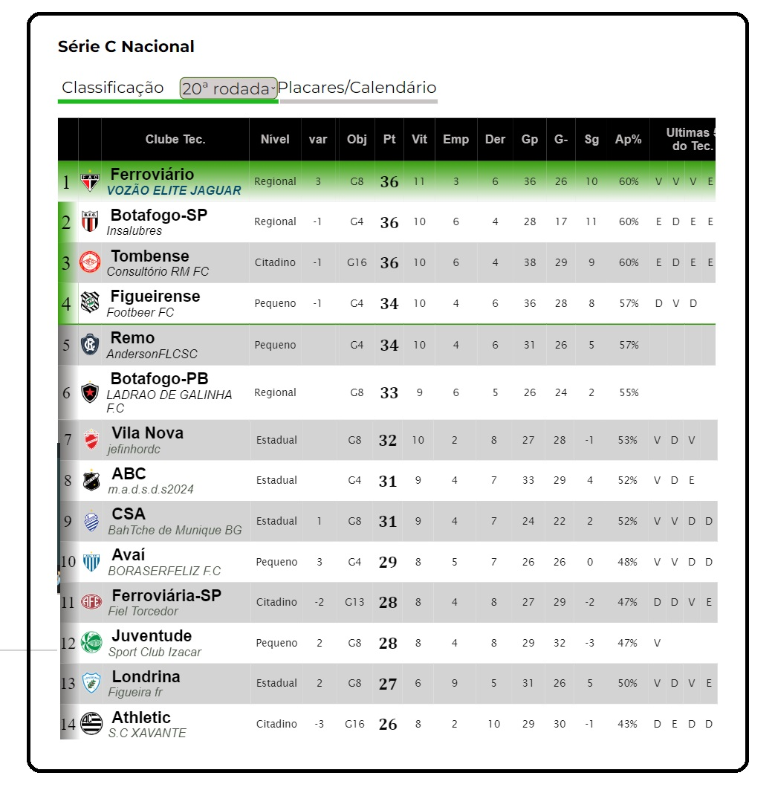

Campeonato de Cartola
A vitória no cartola é o sucesso do seu time!


Redação Cartola - 01/08/2024 - 17h21min
Direção anunciou o terceiro nome de 2024 para a captania do vestiário: AndersonFLSC, com passagens por Mirassol e Portuguesa Paulista, foi o escolhido para dar fim às 13 rodadas em que o vestário esteve tão somente sob a responsabilidade de comissão técnica interina. Deste período não há o que reclamar, com o clube demitindo o "FC CHANANECO" por maus resultados na rodada 7, na 16ª colocação, na borda do rebaixamento, para a atual quinta colocação, com apenas 2 pontos a menos que o os líderes Ferroviário, Botafogo-SP e Tombense.
Na imagem acima, a acirrada disputa na série C, em que a diferença dos líderes até o sexto colocado é de apenas 3 pontos.